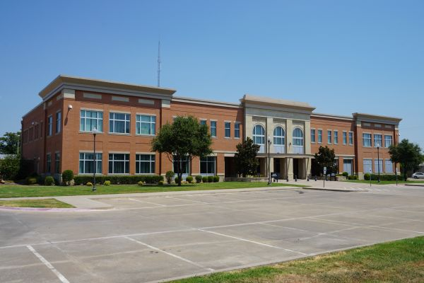
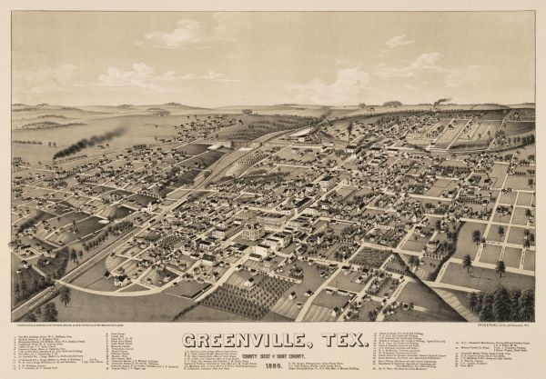

Current Temperature:
°F
Current Wind Speed:
mph
Today's Forecast:
10 Day Forecast
| Day 1 | Day 2 | Day 3 | Day 4 | Day 5 | Day 6 | Day 7 | Day 8 | Day 9 | Day 10 |
|---|---|---|---|---|---|---|---|---|---|
| °F | °F | °F | °F | °F | °F | °F | °F | °F | °F |
Greenville History

Greenville was founded in 1846. The city was named after Thomas J. Green,
a significant contributor to the establishment of Texas as a Republic.
He later became a member of the Congress of the Republic of Texas.
The city was almost named “Pinckneyville” in honor of James
Pinckney Henderson, the first Governor of Texas.
On May 12, 2011, a white buffalo was born near Greenville, Texas
during a thunderstorm on the ranch of Arby Littlesoldier,
who identified himself as a great-great grandson of Sitting Bull.
A public naming ceremony and dedication was held on
June 29, 2011 during which the male calf was officially given
the title "Lightning Medicine Cloud." However, on August 21,
2012, 'Lightning Medicine Cloud' died. The Sheriff's department
declared it had died from a bacterial infection, but the owners
disagree, claiming that the buffalo was allegedly skinned
by an unknown party.
Source: Wikipedia